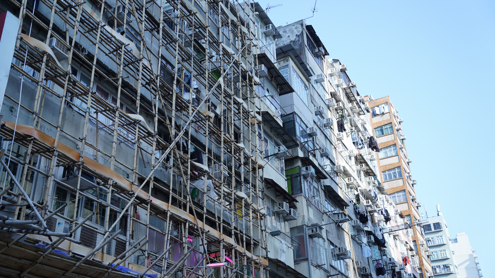
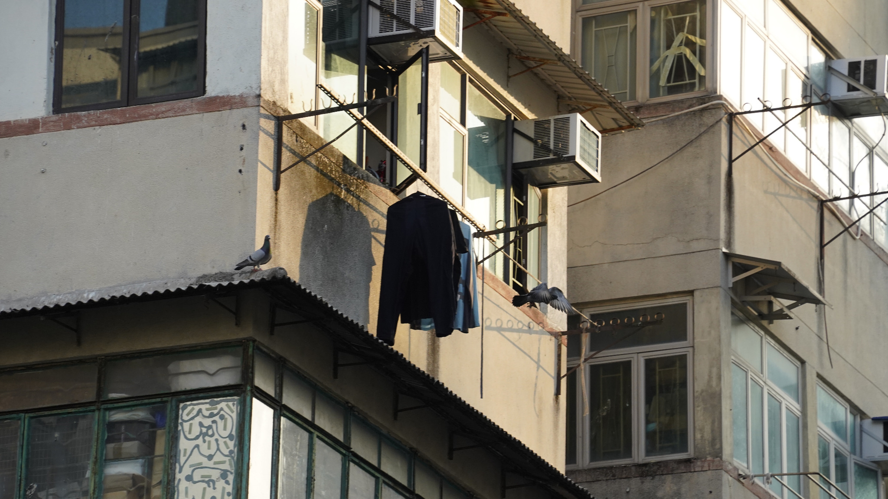
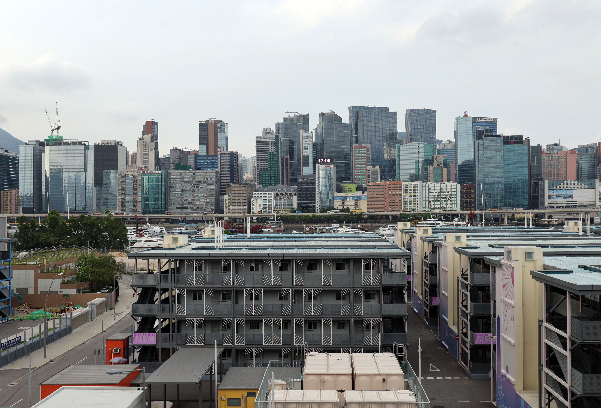

「每個月一出糧，第一件事就係諗交租。」
羅（化名）｜一家四口
羅（化名）與太太及兩名子女住在深水埗一個狹小的分間單位，至今已輪候公屋近五年。羅從事基層工作，家庭收入約 20,000 元，現時月租約 6,000 元，尚未計算水電煤及其他生活開支。對一個四口家庭而言，租金已佔去收入相當大的一部分。加上孩子的書簿、交通和日常雜費，每月家計幾乎沒有多少餘地。兩名子女分別就讀小學和幼稚園，放學回家後，兩兄妹要輪流用同一張桌做功課。羅說，家裡地方太細，連孩子溫書也要遷就大人起居，一到晚上，全家幾乎沒有真正可以安靜下來的空間。

「每個月一出糧，第一件事就係諗交租，其他嘢都要後面先算。」
羅提到，家中空間不足時，孩子做功課需要與家人共用同一位置，「地方真係太細，小朋友連安安靜靜坐低溫書都唔容易。」他又說，輪候期間一家曾搬過一次屋，原因是原本單位加租後難以再負擔。「搬屋最煩唔止係搬嘢，仲要重新適應，連小朋友返學同生活節奏都會受影響。」
截至2025年12月底，過去12個月獲安排入住傳統公屋或「簡約公屋」的一般申請者，其公屋綜合輪候時間維持在 5.1 年。房屋局亦指出，入住「簡約公屋」的一般申請者平均輪候時間約為 3.2 年，與租住分間單位相比，居民平均每年可節省逾 50,000 元租金。
房屋委員會《2024年公共租住房屋申請者統計調查》顯示，截至2024年3月底，一般申請者約有 127,900 名，其中 64% 居於私人永久房屋。換言之，多數仍在輪候的家庭，在等待期間仍然居於私人住屋市場。
公屋輪候時間、簡約公屋安排與租金資料
此圖列出公屋輪候時間、簡約公屋一般申請者平均輪候時間及相關租金資料。
資料來源：房屋局《公屋綜合輪候時間》；房屋局《長遠房屋策略》2025年周年進度報告。
輪候時間與住屋負擔數字
對大多數家庭來說，住屋壓力最先體現在租金。政府統計處《2021年最新人口趨勢》顯示，2021年租住私人住宅單位的家庭住戶，每月租金中位數為 12,000 元，較十年前上升 60.0%；租金與收入比率中位數達 31.4%，高於十年前的 25.7%。另一份《2021年人口普查主要結果》亦顯示，租住私人住宅單位住戶的租金與收入比率中位數為 30.7%，遠高於公營租住房屋住戶的 9.8%。《香港物業報告2025》亦提到，私人住宅租務市場持續運作。對仍在私人市場租住的輪候家庭而言，相關住屋開支會在等待期間持續出現。
私人租住與公營租住的住屋負擔比較
此圖比較私人租住與公營租住的每月租金及租金與收入比率中位數。
點擊看解釋
點擊看解釋
點擊看解釋
點擊看解釋
資料來源：政府統計處《2021年人口普查主要結果》；政府統計處《2021年18區人口選定社會及經濟特徵統計便覽》；差餉物業估價署《香港物業報告2025》。
對仍未上樓的家庭來說，租金是每月固定開支之一。羅提到，在先處理租金後，教育、交通、醫療及日常生活支出便需要再作安排。當家庭長時間留在私人租住市場，相關住屋開支亦會持續出現在每月預算之中。
當租金佔收入比例偏高，家庭可以保留的緩衝金額亦會減少。羅提到，若遇上加租、收入波動、臨時醫療開支或子女教育支出增加，家庭預算便需要重新調整。這亦顯示，輪候期間的住屋安排與家庭每月收支分配有關。
輪候家庭的現居住屋類型
香港房屋委員會《2024年公共租住房屋申請者統計調查》顯示，截至2024年3月底，一般申請者約有 127,900 名，其中 64% 居於私人永久房屋，17% 居於公屋，8% 居於資助出售單位，另有 4% 已入住過渡性房屋。數字顯示，多數仍在輪候的家庭，現時仍然居於私人永久房屋。
輪候家庭現時居住類型
此圖列出一般申請者在輪候期間的現居住屋類型分布。
在一般申請者之中，居於私人永久房屋者佔 64%。
點擊看解釋
資料來源：香港房屋委員會《2024年公共租住房屋申請者統計調查的主要結果》。
根據房委會《2024年公共租住房屋申請者統計調查》，截至2024年3月底，一般申請者之中，64% 居於私人永久房屋。羅、陳及何均提到，在未獲編配單位前，他們需要繼續承擔租金、續租安排，以及搬遷帶來的不確定性。
分間樓宇單位較集中的地區
這組資料列出分間樓宇單位人口較集中的地區，並配合相關地區的住戶租金與收入比中位數，作為輪候家庭現居環境的背景資料。
油尖旺區
2021 年人口普查顯示，油尖旺是居於分間樓宇單位人士最集中的區議會分區之一；區內住戶租金與收入比中位數亦高於全港水平。
深水埗區
2021 年人口普查顯示，深水埗同樣是分間樓宇單位住戶與人口較集中的區域。
九龍城區
九龍城在分間樓宇單位人口分布中亦屬前列區域，住戶租金與收入比中位數亦高於全港整體水平。
資料來源：政府統計處《2021 年人口普查：居於分間樓宇單位人士》、 《2021 年 18 區人口選定社會及經濟特徵統計便覽》；房委會《公共租住房屋申請者統計調查 2024》。
分間樓宇單位住戶的住屋背景
政府統計處資料顯示，2021年全港約有 108,200 個分間樓宇單位，涉及 107,400 個住戶及 215,700 名人士。數字顯示，2021年分間樓宇單位涉及 107,400 個住戶及 215,700 名人士。對於仍未獲編配公屋的家庭而言，分間樓宇單位亦是其中一種現居住屋類型。
2021年分間樓宇單位住戶與居住人口
此圖列出2021年分間樓宇單位的單位數目、住戶數目與居住人口。
資料來源：政府統計處《2021年人口普查：居於分間樓宇單位人士》。
房屋供應情況與私人租住市場條件，會直接影響輪候家庭的現居住屋安排。當家庭未獲編配公屋，而私人市場租金水平持續偏高時，部分住戶會以分租或分間樓宇單位作為現階段住屋選擇。羅、陳及何均提到，租金、空間限制，以及搬遷風險，會同時影響家庭日常開支、子女學習安排及照顧工作。
租金與家庭其他支出安排
對仍然租住私人單位的輪候家庭而言，租金通常是每月固定開支中較大的一項。政府統計處住戶開支統計亦顯示，當固定住屋開支佔收入比例較高時，家庭可分配到其他生活項目的開支會相應減少。羅、陳及何均提到，在每月先處理租金之後，教育、交通、醫療及照顧相關支出往往需要再作取捨。
租金與家庭支出安排
此圖整理羅、陳及何提到的租金支出與其他家庭開支安排。
家庭收入有限
每月可用資源本來已不多。
租金支出偏高
現金流先被住屋開支抽走。
其他必要支出需要重新安排
教育、醫療、交通與照顧等必要支出都被迫收窄。
儲蓄空間消失
家庭可保留的緩衝金額減少。
應付突發開支的空間減少
一遇收入波動便更容易失衡。
資料來源：政府統計處《2019/20年住戶開支統計調查及重訂消費物價指數基期》；羅、陳及何訪問整理。
當租金佔收入比例偏高，家庭可保留的緩衝金額會相對有限。羅、陳及何均提到，若遇上加租、收入波動、臨時醫療開支或子女教育支出增加，家庭預算便需要重新調整。這亦顯示，輪候期間的住屋安排會影響家庭每月可分配的資源。
除了金錢開支，羅、陳及何亦提到，狹小空間、租約不穩定，以及搬遷可能，會影響家庭的日常生活安排。例如，子女未必有固定學習空間，照顧者在家中處理照顧工作亦較困難。對部分家庭而言，住屋問題因此同時牽涉空間使用、生活安排和照顧需要。
房屋局公布的綜合輪候時間，主要反映制度層面的輪候情況；不過對仍未獲編配單位的家庭而言，等待期間仍然需要按月承擔實際住屋開支。羅、陳及何均提到，在未上樓前，高租金、擠迫環境和租住安排，會持續影響家庭的日常開支及生活安排。
輪候期間的住屋不穩定情況
住屋狀況長期不穩定，亦會影響家庭作中長期安排的能力。羅提到，在租約期較短、續租條件不確定，以及每月租金壓力持續存在的情況下，家庭較少預先安排儲蓄、子女教育、長者照顧或其他較大的必要支出。
當家庭無法確定數月後是否仍住在同一單位，部分生活安排便需要以較短期方式處理。羅提到，搬遷可能、加租，以及空間不足，會影響升學安排、工作安排和照顧安排。他亦提到，住屋不穩定會影響家庭對升學、工作及照顧安排的規劃。
申請至入住時間線
此圖整理由申請至入住期間，羅提到的住屋與生活安排。
提出申請進入輪候
家庭進入制度，但現實生活未同步得到較穩定住屋安排。
持續輪候承受壓力
等待期間仍要按月交租，並面對加租與租約不穩定。
私租／劏房壓力累積
高租金、狹小空間、子女教育與照顧安排同步受影響。
獲安排入住重建生活
獲編配單位後，家庭住屋安排會較前穩定。
資料來源：房屋局《公屋綜合輪候時間》；香港房屋委員會《2024年公共租住房屋申請者統計調查的主要結果》；羅訪問整理。
住屋不穩定與家庭短期安排
此圖整理羅提到的短期開支與生活安排。
每月都要先處理住屋開支，其他安排只能往後放。
家庭缺乏應對突發事件的餘地。
與收入和時間有關的選擇更傾向保守。
較長遠的教育投資被迫一再後移。
照顧安排需要按住屋情況調整。
家庭較多以較短期方式處理開支、教育及照顧安排。
羅提到，當每月需要先確保有足夠租金時，轉工、進修、搬遷，以及子女教育支援等安排都會受到影響。
接受採訪的羅、陳及何均提到，輪候期間除了租金外，空間不足、租約安排，以及照顧和教育安排調整亦是日常面對的問題。
以下兩個個案來自另外兩組受訪家庭。
「唔係唔想俾佢多啲，而係好多時交完租，真係冇乜剩。」
陳（化名）｜單親家庭
陳（化名）是一位單親父親，與兒子同住觀塘一個分租單位，至今已輪候公屋近四年。他的收入約 16,000 元，現時月租約 7,000 元。按陳提供資料，月租約佔其收入 43.8%。若再計算食物、交通、學校開支和基本日常支出，家庭可用資源會進一步減少。陳說，他較關心的是孩子在擠迫環境下讀書的情況。

「唔係唔想俾佢多啲，而係好多時交完租，真係冇乜剩。」
聲音已經處理。
陳說，住屋開支會直接影響家庭還能留下多少資源給孩子。「屋企太細，佢溫書我要就住，大家都冇乜私人空間。」他曾想替兒子安排補習，但最後放棄，因為每月交完租和基本生活開支後，已難再多出一筆固定支出。「有時唔係唔想俾，係真係計過條數之後做唔到。」
「交租已經好吃力，但最怕係屋企環境唔適合照顧老人家。」
何（化名）｜主要照顧者
何（化名）與行動不便的父親同住，是家中的主要照顧者，至今已輪候公屋近六年。他現時收入約 15,000 元，月租約 6,500 元，另加水電煤、交通及父親的醫療相關支出，整體負擔並不輕。對何而言，住屋問題不只在於租金，也在於狹小空間令照顧工作變得更加困難。何說，父親日常出入和洗澡都要特別小心，自己放工回家後還要處理不少照顧工作。由於單位空間有限，家中幾乎沒有多餘位置放置輔助用品，連最基本的起居都要格外遷就。

「交租已經好吃力，但最怕係屋企環境唔適合照顧老人家。」
何提到，父親日常起居要格外小心，「地方太細，佢行動又唔方便，我成日都驚佢會跌親。」他亦提到，擔心自己不在家時父親突然跌倒或身體不適。「我返工嗰陣都成日掛住屋企，驚有咩事幫唔切。」


政策文件與家庭訪問中的常見用語
左圖整理政策文件中的常見詞語，右圖整理羅、陳及何訪問中反覆出現的生活詞語。
資料來源：房屋局《長遠房屋策略》2025年周年進度報告；房屋局《簡約公屋》；香港房屋委員會《2024年公共租住房屋申請者統計調查的主要結果》；羅訪問整理。
政策供應數字與家庭輪候處境
從政策角度看，政府近年一直強調公營房屋供應正在提速。《長遠房屋策略》2025年周年進度報告指出，截至2025年6月底，公屋綜合輪候時間為 5.1 年，較2022年3月底的 6.1 年縮短整整一年。報告亦指出，未來十年政府已覓得足夠土地，以滿足 294,000 個公營房屋單位的供應目標，並且自2022年7月至2025年6月，公營房屋實際總建屋量達 50,600 個單位。相關數字列出近年公營房屋供應與輪候時間變化。

政策進度與家庭輪候處境的時間差異
此圖並列政策時間資料與羅、陳及何提到的家庭時間安排。
作為比較輪候時間變化的起點。
列出綜合輪候時間由 6.1 年回落至 5.1 年。
以長期土地與建屋規劃回應需求。
房屋局提出的相關目標。
現金流先被住屋開支抽走。
居住環境未見即時改善。
何提到，搬遷與照顧安排需要由家庭自行處理。
陳提到，住屋開支會影響其他日常支出安排。
資料來源：房屋局《長遠房屋策略》2025年周年進度報告；房屋局《公屋綜合輪候時間》；房屋局《簡約公屋》；羅、陳及何訪問整理。
房屋局亦把簡約公屋定位為過渡性安排，希望在傳統公屋供應到位之前，先為部分家庭提供較低成本住屋。羅、陳及何的經驗則顯示，在未獲編配單位前，家庭仍需持續處理租金、空間及照顧安排。
輪候期間涉及的生活成本
羅、陳及何均提到，輪候期間需要持續處理租金、水電煤、交通、教育、醫療和搬屋等支出項目。對仍然居於分間樓宇單位或分租單位的家庭而言，這些支出會持續出現在每月開支之中。
房屋局曾表示，入住簡約公屋的住戶平均每年可節省逾 50,000 元租金。對仍然居於私租或分間樓宇單位的輪候家庭而言，在未獲編配較低租金住屋前，相關住屋開支仍需持續由家庭自行承擔。
輪候期間涉及的主要成本
此圖整理羅、陳及何提到，以及資料中較常見的住屋相關成本項目。
輪候
資料來源：綜合房屋局、政府統計處、香港房屋委員會資料及羅、陳及何訪問整理。
對仍未獲編配公屋的家庭而言，輪候期間需要持續處理租金、居住空間及搬遷安排，並影響家庭每月收支與生活安排。
資料來源 :
- 房屋局。《公屋綜合輪候時間》
- 房屋局。《長遠房屋策略》2025年周年進度報告
- 政府統計處。《2021年最新人口趨勢》
- 政府統計處。《2021年人口普查主要結果》
- 政府統計處。《2021年人口普查：居於分間樓宇單位人士》
- 政府統計處。《2021年18區人口選定社會及經濟特徵統計便覽》
- 政府統計處。《2019/20年住戶開支統計調查及重訂消費物價指數基期》
- 香港房屋委員會。《2024年公共租住房屋申請者統計調查的主要結果》
- 差餉物業估價署。《香港物業報告2025》
- 房屋局。《簡約公屋》
以上資料均為撰稿時可取得的最近期官方資料；當中《2019/20年住戶開支統計調查及重訂消費物價指數基期》為目前最近一輪完整官方結果。